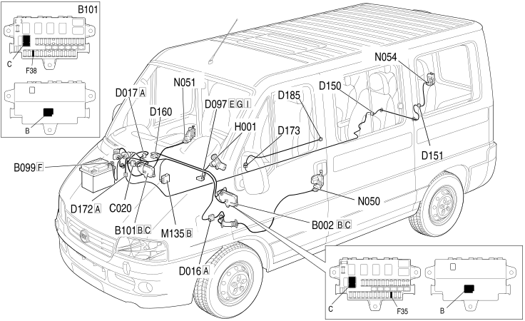

E3040 CENTRAL LOCKING LOCATION COMPONENTS
- Path
- Electrical equipment > 1 ELECTRICAL FUNCTIONS > E30 ELECTRICALLY ACTIVATED DEVICES > E3040 CENTRAL LOCKING > E3040 CENTRAL LOCKING LOCATION COMPONENTS
- Kind
- topic
- Applies to
- all engines; all production periods
- Interactive page
- https://sloeber94.github.io/elrnDB-fDct/en/#/244001757
Applies to: all engines; all production periods
Location Components

Component code | Description | Reference to the assembly |
|---|---|---|
JUNCTION UNIT UNDER DASHBOARD | - | |
MAXI FUSE BOX ON BATTERY | - | |
OPTIONAL JUNCTION UNIT UNDER THE DASHBOARD | - | |
ADDITIONAL DASHBOARD/LEFT FRONT DOOR COUPLING | - | |
ADDITIONAL DASHBOARD/RIGHT FRONT DOOR COUPLING | - | |
SHORT CIRCUITING COUPLING | - | |
RIGHT REAR/RIGHT SWING DOOR COUPLING | - | |
RIGHT SWING DOOR/RIGHT SWING DOOR LOCK COUPLING | - | |
DASHBOARD/OPTIONAL DASHBOARD COUPLING | - | |
RIGHT REAR/OPTIONAL DASHBOARD COUPLING | - | |
RIGHT REAR/SLIDING SIDE DOOR BUTTON COUPLING | - | |
CONTACT BOARD ON SLIDING SIDE DOOR | - | |
ELECTRIC WINDOWS/CENTRAL LOCKING CONTROL UNIT | ||
DRIVER'S FRONT DOOR LOCK GEARED MOTOR | ||
RIGHT FRONT DOOR LOCK GEARED MOTOR | ||
RIGHT REAR SWING DOOR LOCK GEARED MOTOR | - | |
- | ||
- | ||
- | ||
- | ||
- | ||
- |
Topics linked from this page (16)
- B002 JUNCTION UNIT UNDER DASHBOARD
- B099 MAXI FUSE BOX ON BATTERY
- B101 OPTIONAL JUNCTION UNIT UNDER THE DASHBOARD
- D016 ADDITIONAL DASHBOARD/LEFT FRONT DOOR COUPLING
- D017 ADDITIONAL DASHBOARD/RIGHT FRONT DOOR COUPLING
- D097 SHORT CIRCUITING COUPLING
- D150 RIGHT REAR/RIGHT SWING DOOR COUPLING
- D151 RIGHT SWING DOOR/RIGHT SWING DOOR LOCK COUPLING
- D160 DASHBOARD/OPTIONAL DASHBOARD COUPLING
- D172 RIGHT REAR/OPTIONAL DASHBOARD COUPLING
- D173 RIGHT REAR/SLIDING SIDE DOOR BUTTON COUPLING
- D185 CONTACT BOARD ON SLIDING SIDE DOOR
- M135 ELECTRIC WINDOWS/CENTRAL LOCKING CONTROL UNIT
- N050 DRIVER'S FRONT DOOR LOCK GEARED MOTOR
- N051 RIGHT FRONT DOOR LOCK GEARED MOTOR
- N054 RIGHT REAR SWING DOOR LOCK GEARED MOTOR